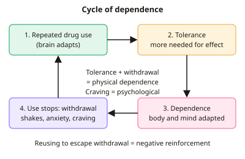

A-level Psychology Year 13 · Topic 15
Addiction
This topic explains how addiction develops, why it's so hard to stop, and how it can be treated.
We will define dependence, tolerance and withdrawal, look at risk factors, and explain nicotine and gambling addiction.
Then we evaluate drug and behavioural therapies, the theory of planned behaviour, and Prochaska's stages of change.
- 7 subtopics
- 239 questions
- Free: 15.1 notes and 10 questions
In this topic
- 15.1Describing addiction: physical and psychological dependence, tolerance and withdrawalFree below · 33 questions
- 15.2Risk factors in the development of addiction: genetic vulnerability, stress, personality, family and peersOpen in Full Marks · 25 questions
- 15.3Explanations for nicotine addiction: brain neurochemistry and learning theoryOpen in Full Marks · 25 questions
- 15.4Explanations for gambling addiction: learning theory and cognitive biasOpen in Full Marks · 26 questions
- 15.5Reducing addiction: drug therapy and behavioural interventions (aversion therapy, covert sensitisation)Open in Full Marks · 39 questions
- 15.6Cognitive approaches to reducing addiction: the theory of planned behaviourOpen in Full Marks · 28 questions
- 15.7Prochaska's six-stage model of behaviour change and relapseOpen in Full Marks · 63 questions
15.1 · Free notes
Describing addiction: physical and psychological dependence, tolerance and withdrawal

Key points
- Addiction is a compulsion to keep using a substance or repeating a behaviour despite harm, with loss of control. DSM-5 groups substance addictions as substance use disorder, diagnosed from 11 criteria.
- Physical dependence means the body has adapted to the drug and needs it to function normally. It is shown by tolerance and a withdrawal syndrome.
- Psychological dependence is an emotional and motivational need to use, with cravings, preoccupation and a belief that the drug is needed to cope. It can occur without physical dependence, for example in gambling.
- Tolerance is a reduced response to the same dose, so a larger dose is needed for the original effect. It is caused by neuroadaptation, such as receptor desensitisation or downregulation, and by faster metabolism.
- Withdrawal syndrome is the set of unpleasant symptoms that appear when drug use is reduced or stopped. Physical symptoms include tremors, sweating, nausea and headache. Psychological symptoms include anxiety, irritability, low mood and craving.
- Withdrawal maintains addiction through negative reinforcement. Using the drug again removes the unpleasant symptoms, so use is repeated. This is a major cause of relapse.
- Severity varies by drug. Alcohol and benzodiazepine withdrawal can be life-threatening (seizures, delirium tremens). Nicotine withdrawal is unpleasant but not dangerous, and peaks in the first few days.
- DSM-5 severity bands: 2-3 criteria is mild, 4-5 is moderate, 6 or more is severe. The criteria include tolerance, withdrawal, craving, loss of control and continued use despite problems.
- Behavioural addictions such as gambling have no drug, so psychological dependence is central. Griffiths' components model lists six features: salience, mood modification, tolerance, withdrawal, conflict and relapse.
- Physical and psychological dependence are not entirely separate, because cravings have a neurochemical basis. In exams, link each symptom to the correct type and use terms such as neuroadaptation, craving and negative reinforcement.
In more detail
- Worked tolerance: someone who needed 2 pints to feel relaxed now needs 5 pints for the same effect, because their body has adapted.
- Worked withdrawal cycle: a smoker wakes up irritable and craving (withdrawal) → smokes → feels relief → the relief negatively reinforces smoking.
- Gambling withdrawal: gamblers who try to stop can become restless and irritable, which shows withdrawal is not only physical.
- Worked DSM-5 example: a person with tolerance, withdrawal, craving and failed attempts to cut down shows 4 criteria, so they would have a moderate substance use disorder.
Practice
Describing addiction: physical and psychological dependence, tolerance and withdrawal: 10 questions
Pick an answer to check it, or open the answer for the explanation.
1. Which of the following best defines tolerance in addiction?
- Being able to stop using without any symptoms
- Unpleasant symptoms when drug use is stopped
- A larger dose is needed to produce the original effect
- A strong urge to use the drug in certain places
Show answer
C: A larger dose is needed to produce the original effect. Tolerance is a reduced response to the same dose, so the user needs more to get the original effect. The other options describe withdrawal, cue-triggered craving and absence of dependence.
2. Aisha has drunk daily for years. When she misses a drink her hands shake and she sweats. This is best described as a:
- withdrawal syndrome
- tolerance effect
- relapse
- conditioned cue response
Show answer
A: withdrawal syndrome. Unpleasant physical symptoms after stopping or reducing use are a withdrawal syndrome, which is a sign of physical dependence.
3. Which is a psychological rather than a physical withdrawal symptom?
- Nausea
- Sweating
- Tremors
- Irritability and anxiety
Show answer
D: Irritability and anxiety. Irritability and anxiety are emotional or psychological symptoms. Sweating, tremors and nausea are physical symptoms.
4. Which statement best describes psychological dependence?
- The body needs the drug to function normally
- An emotional need to use, with cravings and preoccupation
- A reduced response to the same dose
- It only occurs with illegal drugs
Show answer
B: An emotional need to use, with cravings and preoccupation. Psychological dependence is the emotional and motivational need for the drug or behaviour, shown by craving and preoccupation. Needing the drug to function physically describes physical dependence.
5. Under DSM-5, a patient meets 5 of the 11 criteria for a substance use disorder. What severity is this?
- Mild
- Moderate
- Below the diagnostic threshold
- Severe
Show answer
B: Moderate. DSM-5 bands: 2-3 criteria is mild, 4-5 is moderate and 6 or more is severe. Five criteria is therefore moderate.
6. A drinker needed 2 units of alcohol to feel relaxed at first, but now needs 6 units. By what factor has the dose needed risen?
- ×4
- ×3
- ×2
- ×6
Show answer
B: ×3. 6 ÷ 2 = 3, so the dose needed has tripled. This increase is evidence of tolerance.
7. Which statement about withdrawal syndrome is correct?
- Withdrawal is identical for every drug
- Withdrawal syndrome only appears while the drug is present
- Withdrawal syndrome follows reduction or cessation of use
- Withdrawal symptoms are always purely physical
Show answer
C: Withdrawal syndrome follows reduction or cessation of use. Withdrawal appears when use is reduced or stopped. It has physical and psychological features, and it differs between drugs.
8. Why does withdrawal help to maintain an addiction?
- Using again removes the symptoms, which is negative reinforcement
- It removes all cravings
- It makes the drug taste more pleasant
- It permanently increases tolerance
Show answer
A: Using again removes the symptoms, which is negative reinforcement. Taking the drug relieves the unpleasant symptoms. Removing an unpleasant state strengthens the behaviour, which is negative reinforcement, and this leads to relapse.
9. A person is addicted to gambling and has no substance in the body. Which concept most clearly explains their compulsion?
- Receptor desensitisation
- Metabolic tolerance
- Physical dependence on a drug
- Psychological dependence
Show answer
D: Psychological dependence. With no drug involved, the compulsion is psychological dependence, shown by craving, preoccupation and loss of control. The other options need a drug in the body.
10. Which is NOT one of Griffiths' six components of addiction?
- Genetic vulnerability
- Mood modification
- Conflict
- Salience
Show answer
A: Genetic vulnerability. Griffiths' components are salience, mood modification, tolerance, withdrawal, conflict and relapse. Genetic vulnerability is a risk factor, not a component.
Keep going in Full Marks
Full Marks has 33 questions on Describing addiction: physical and psychological dependence, tolerance and withdrawal (23 more than here), set out in practice levels. You also get notes and 3D models for all 7 subtopics of Addiction, plus games, timed exams and past papers.
On your exam board
- AQATopic 10: Addiction
- EdexcelTopic 6C: Option: Health psychology
- CambridgeTopic 7: Clinical psychology
Not in the OCR specification.